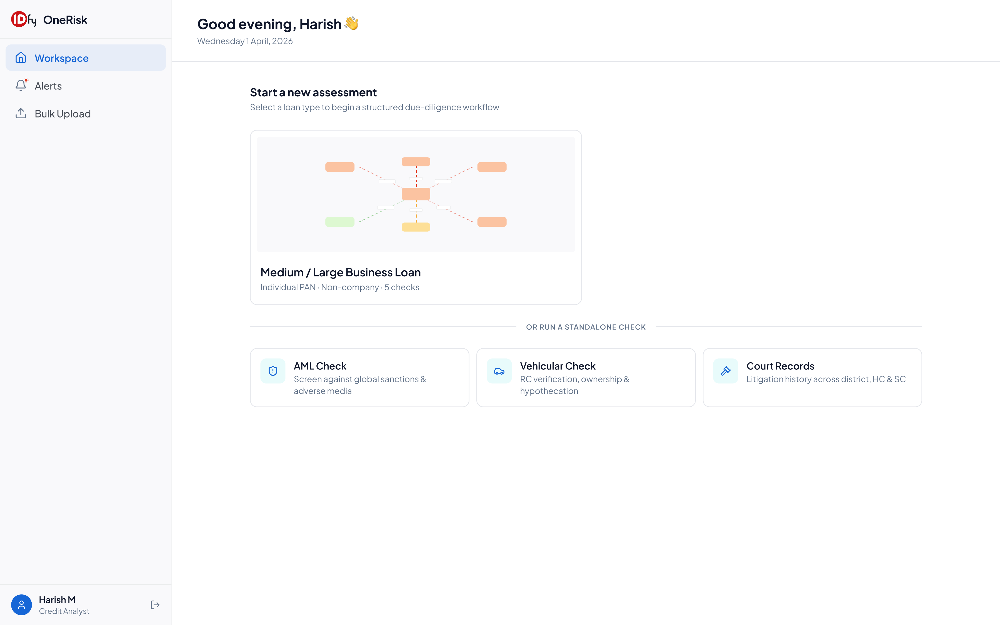
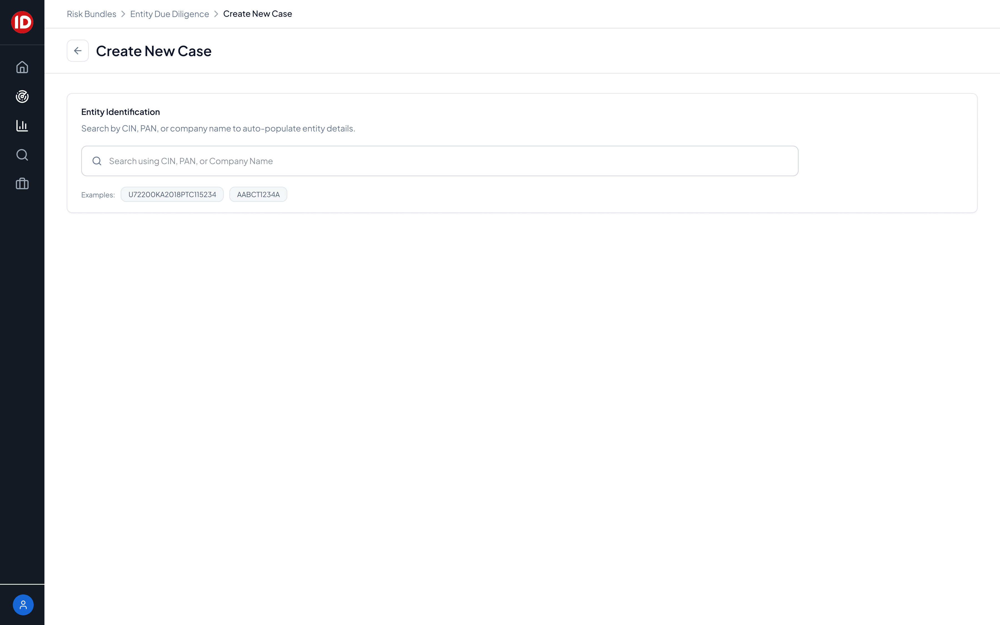
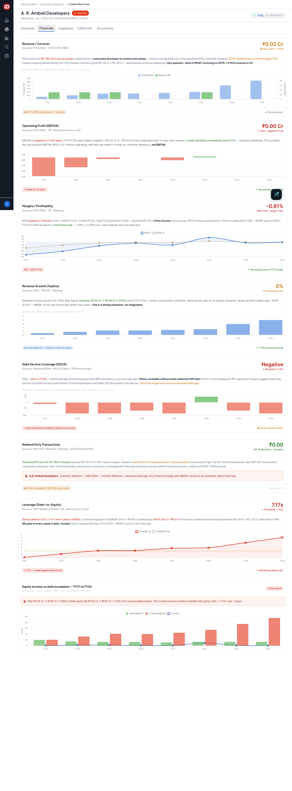
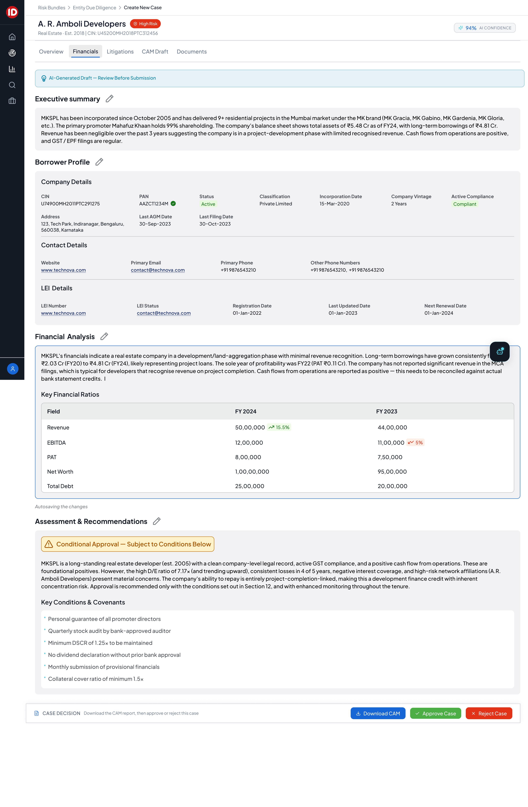
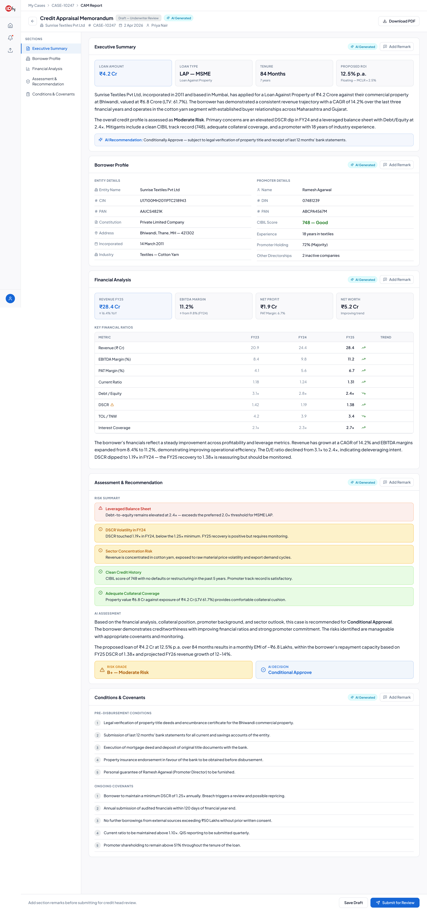

01 · Context
The problem space
IDfy is Asia's #1 identity verification platform, processing 70M+ monthly verifications
for 1,500+ enterprise clients. Banks, NBFCs, and lending institutions needed a single platform to assess
the risk of entities — companies, promoters, and their networks — before extending credit or onboarding them.
The existing landscape was fragmented: analysts juggled MCA filings, court databases, GST portals,
credit bureaus, and manually written CAM reports. This process took days, introduced human error,
and created inconsistency across assessments.
OneRisk was conceived as a unified ecosystem: one place to run entity due diligence,
visualise corporate network contagion, assess financial health, check litigation history, and generate
AI-powered Credit Appraisal Memorandums — all with a live AI confidence score.
02 · My Role
End-to-end ownership
I led the design of OneRisk as the sole product designer, partnering directly with
PMs, tech leads, data engineers, and enterprise stakeholders. My responsibilities spanned the full
product design lifecycle:
🗺️
Product Strategy
Defining the 0→1 vision, feature prioritisation, and modular system architecture to support rapid enterprise client acquisition.
🔬
User Research
Conducted interviews with credit analysts and underwriters to map mental models, decision flows, and pain points in risk assessment.
🏗️
Information Architecture
Designed the full IA for a complex multi-entity, multi-module system — from case creation to CAM submission.
✦
AI-Native Design
Designed AI confidence scoring, AI-generated insight cards, and the CAM Draft editor with human-AI collaboration patterns.
📊
Data Visualisation
Designed the Network Contagion Map, financial health charts, and compliance dashboards for dense, time-pressured use cases.
🤝
Stakeholder Alignment
Presented and aligned designs with PMs, tech, and enterprise clients across phased rollouts.
03 · Key Screens
Designing for complexity,
not despite it.
The Workspace — the entry point for credit analysts starting a new risk assessment.
Designed for clarity and speed: select a loan type, begin a structured due-diligence workflow,
or run a standalone check (AML, vehicle, court records).

Workspace — First-time user onboarding + new assessment entry point
Create New Case — Analysts search by CIN, PAN, or company name to auto-populate
entity details, or create cases manually with entity type selection. Designed to eliminate repetitive
data entry and reduce time-to-assessment.

Create New Case — CIN/PAN search with auto-populate
Entity Overview — The centrepiece of OneRisk. A credit analyst can see the
full risk picture of an entity at a glance: the Network Contagion Map showing corporate relationships
and linked risks, AI Insights flagging litigation and AML matches, and a Financial Health summary —
all backed by a live AI confidence score.
Entity Overview — Network Contagion Map + AI Insights + Financial Health + Compliance
Financials Deep-Dive — Designed for the analyst who needs to go beyond the summary.
Multi-year financial data with trend charts, ratio analysis, data source attribution
(MCA, GST, ITR, Banking), and AI-generated reconciliation alerts — each with a clear signal
and threshold indicator.

Financials Tab — 8-year trend analysis with AI-flagged anomalies and data source reconciliation
CAM Draft — The most complex screen in OneRisk. An AI-generated Credit Appraisal
Memorandum that an underwriter reviews, annotates, and submits. Designed with editable sections,
"AI Generated" labelling for transparency, inline add-remark functionality, and a sticky case
decision bar (Download, Approve, Reject).

CAM Draft — AI-generated assessment with editable sections, financial ratios, and conditions & covenants
CAM Report (Downloadable) — The final structured report generated after underwriter
review. Designed for external submission, covering executive summary, borrower profile, financial
analysis, assessment & recommendation, and conditions & covenants.

CAM Report — Full downloadable report with risk grade, AI decision, and covenant conditions
04 · Design Decisions
The thinking behind
the choices.
🕸️
Network Contagion Map
Visualising corporate linkages as a graph rather than a table — enabling analysts to instantly see contagion risk from linked entities, directors, and subsidiaries.
✦
AI Confidence Score
A persistent 94% AI Confidence badge on every case — building analyst trust in AI outputs while creating clear accountability for when human review is needed.
📎
Data Source Attribution
Every data point shows its source (MCA, GST, Banking, ITR). Analysts don't trust black-box numbers — showing provenance was critical for adoption.
✏️
Human-AI CAM Drafts
AI generates the draft; humans review and annotate. Clear "AI Generated" labels, editable sections, and add-remark flows ensure analysts stay in control.
🚦
Risk Signal Hierarchy
Critical alerts (🚨), warnings (⚠️), and clean signals (✓) use consistent visual language across the entire platform — reducing cognitive load at speed.
📐
Modular System Design
Each module (EDD, Financials, Litigations, CAM) is independently usable and composable — enabling rapid onboarding of new enterprise clients with custom configurations.
05 · Outcomes
Impact at scale.
0 → 1
Product built from scratch, shipped to enterprise clients
₹45L/mo
Recurring revenue from VDD portal redesign
80%
TAT reduction in Transaction Intelligence
10+
New enterprise clients secured
₹3 Cr
Revenue retention via report revamp for 50+ accounts
1,500+
Enterprise clients on the IDfy platform
06 · Learnings
What this project
taught me.
01
Trust is a design problem. In financial products, users won't act on data they don't trust. Showing source attribution, AI confidence scores, and clear signal hierarchies wasn't cosmetic — it was the core UX challenge.
02
Modularity enables scale. Designing each module to work independently meant we could onboard enterprise clients with custom configurations without breaking the overall system.
03
AI needs a human layer. Analysts pushed back on fully automated outputs. Designing for human-AI collaboration — where AI generates drafts and humans review and annotate — drove adoption far more than pure automation.
04
Complexity ≠ complicated. The domain is genuinely complex — multi-entity networks, financial ratios, litigation data. The design challenge was to make complexity navigable, not to hide it.